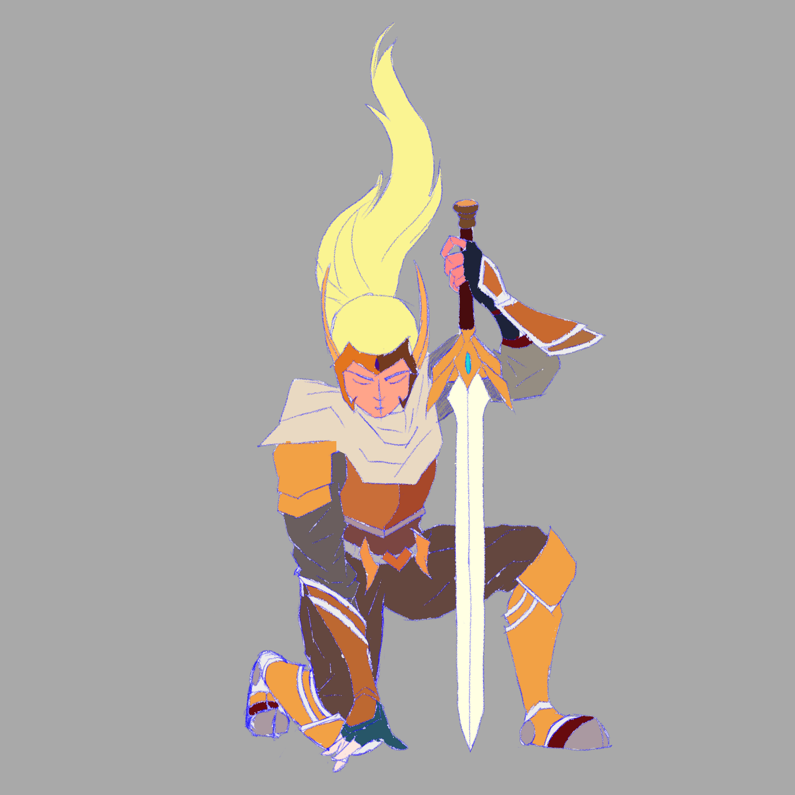
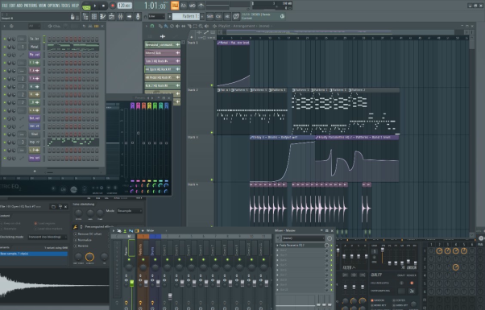
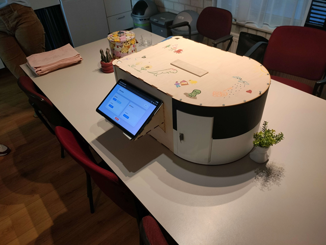
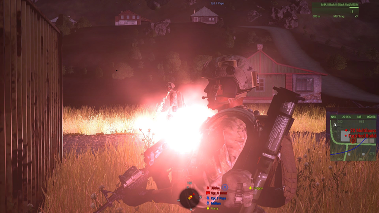
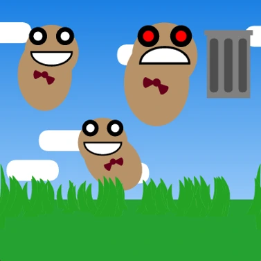
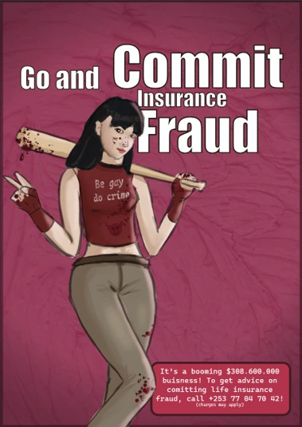

my personal favorites:





this is some text explaining my portfolio

I followed a producing course at vrijhof. I learned how to make music, or at least the basics of how to use fl studio. I found that it is not really the tools (although good plugins do help a lot) that makes music good, but it is mainly just experience. Watching Kelvin Bolink at work compared to what we were doing was very inspiring. It doesn’t sound great yet, but I think this is something I can pick up once in a while to make something.


We developed a system that lets you send messages to a random person in your neighbourhood. Hoping to improve neighbourhood cohesion. It all works with an internal sorting system which is keeping track of all the letters. We even got to show it off in Deventer!
I had a lot of fun making this! I found out I love blender (even though it can be hell at times) and modelling! I made all the textures by hand, which was even more painful, but it looks very nice now. You can interact with it by clicking the link!
Simon's special tank (itch is currently down)
Thanks to Professional Development I got to do something I was already interested in for ECs, isn’t that amazing? I made a mission in Arma 3 to show off my slowly increasing coding skills, and so that I could experiment with interactive storytelling. This was a lot of fun, and I got about 20 players to test it at once! I cut up the 3 hours of footage and posted it on YouTube. Have a watch here:
check it out!One of my first ventures into processing (god do I hate it). I created Bob. A potato which wiggles around. It spawns in the ground and then grows untill you pick it up. Be warned though, it gets mad if you try to throw it away.


The first time I've had to actually use adobe software was when designing a poster. God was it awful. I've since switched over to inkscape. The task was to create a poster that inspires behavoir change. The drawing itself was made in clip studio paint.